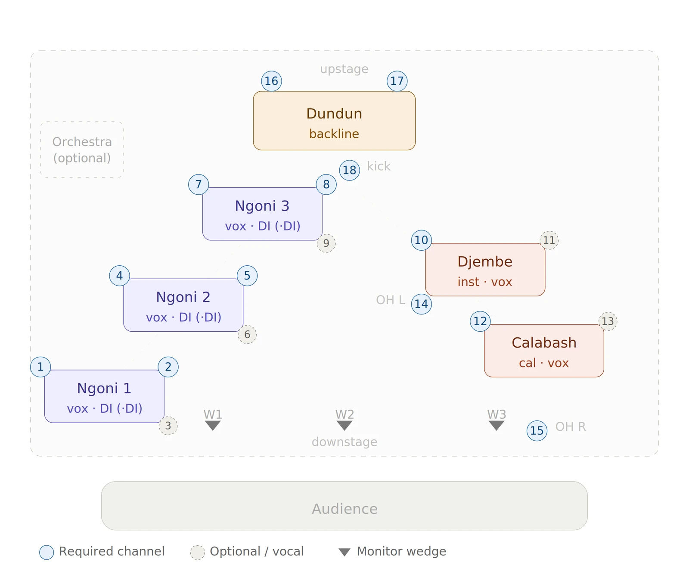

About
This music is older than all of us. Born from the Donso hunter's tradition of West Africa, the kamale n'goni carries a healing resonance that has moved people to tears, to joy, and through profound transformation for centuries.
SANJI brings these ancient instruments into a contemporary context. Four artists channeling the deep-rooted power of the Kamale N'goni, djembe, and voice into something visceral and alive. Heavy roots. Super danceable. A bridge between tradition and the present moment.
At a Glance
- GenreWest African roots / world-fusion, Percussion and Dance, Petricore
- Based inTaos, NM, USA
- Lineup4 artists
- Core instrumentsKamale N'goni, Djembe, Dunun, Calabash, Vocals, Karinyan
- Set lengths45, 60, 90, or 120 minute sets
Lineup
- Miles AndersonKamale N'goni · Lead Vocals · Dunun
- Rob UsherKamale N'goni · Djembe · Karinyan · Calabash
- Mitchell OlsonKamale N'goni · Calabash · Dunun · Vocals
- Fred SimpsonSpiritual Advisor · Calabash · Djembe · Vocals
Headlining and Main Stage Performances
- Crestone Energy Fair Headliner · 2025
- Crest Fest Headliner · 2024
- Tribal Vision Festival Headliner · 2024, 2023, 2022
- Salamander Fest Headliner · 2022
- Gaia's Gathering Headliner · 2025, 2022
- Unison Festival Main Stage · 2025
- Convergence Wellness Festival Main Stage · 2024
- Globalquerque Main Stage · 2025
Stage Plot & Tech

Downloads
Logo, stage plot, tech rider, and high-res photos for venues and press.
Photos
Click a photo for the full-resolution file (6000 × 4000). Please credit the photographer.
Photos by Hailey Jane.